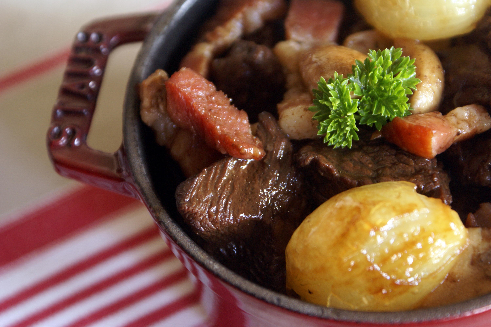

<ion-view view-title="Boeuf Bourguignonn">

    <ion-content class="padding">


        <h1>Boeuf Bourguignon</h1>

        

        <p class="gras">Temps de préparation : 10 minutes</p>

        <p class="gras">Temps de cuisson : 60 minutes</p>

        <p class="gras">Ingrédients (pour 6 personnes) :</p>

        <ul>
            <li>- 800 g de boeuf pour bourguignon</li>
            <li>- 100 g de lardons</li>
            <li>- 50 g de beurre ou 3 cuillères à soupe d'huile</li>
            <li>- 2/3 de litre de vin rouge</li>
            <li>- 2 oignons</li>
            <li>- Ail</li>
            <li>- 2 cuillères à soupe de farine</li>
            <li>- 1 bouquet garni</li>
            <li>- Sel, poivre</li>
            <li>- 250 g de champignons de Paris (en boîte) </li>

        </ul><br>

        <p class="gras">Préparation de la recette :</p>

        <p>Dans une cocotte minute, faire roussir la viande et les lardons dans l’huile ou le beurre.</p>

        <p>Ajouter les oignons coupés en petits morceaux.</p>

        <p>Ajouter la boîte de champignons.</p>

        <p>Saupoudrer de farine. Mélanger.</p>

        <p>Laisser dorer un instant.</p>

        <p>Mouiller avec le vin rouge qui doit recouvrir la viande. Saler et poivrer.</p>

        <p>Ajouter l’ail et le bouquet garni.</p>

        <p>Fermer la cocotte minute.</p>

        <p>Laisser cuire doucement 60 mn à partir de la mise en rotation de la soupape.</p>


    </ion-content>

</ion-view>